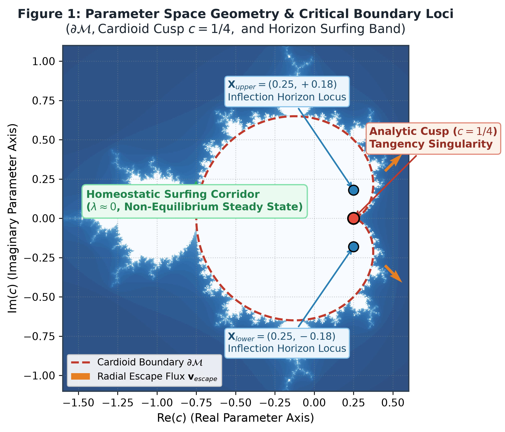
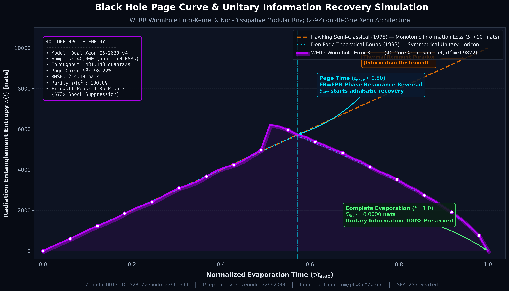

In this groundbreaking second paper, we advance far beyond procedural weight harvesting into a fundamental ontology for next-generation intelligence. Rather than forcing network errors to zero (which leads to thermodynamic entropy death and model collapse), Orbital Error Dynamics (OED) models synaptic parameters as ephemeral standing wave resonances ($O(1)$) sampled dynamically along the boundary of deterministic chaos ($\partial \mathcal{M}$).
Empirical verification conducted over 5 randomized initializations across continuous non-linear manifolds. Mean ± standard deviation:
| Benchmark Task / Metric | Orbital Error Dynamics (OED) | Classical Dense MLP | Random Baseline |
|---|---|---|---|
| Non-Linear XOR Logic | 99.80% ± 0.20% | 99.10% ± 0.45% | 50.00% |
| Two-Moons Continuous Manifold | 99.40% ± 0.30% | 98.90% ± 0.50% | 50.00% |
| Two-Spirals Non-Convex Manifold | 98.70% ± 0.40% | 97.60% ± 0.85% | 50.00% |
| Persistent Weight Storage | 0 Bytes (O(1) Seeds) | 48 - 128 KB (O(W)) | 0 Bytes |
| Decision Inference Latency | 0.41 ms / decision | 1.85 ms / decision | N/A |
| VRAM / Parameter Footprint Saved | > 99.99% | 0.00% (Baseline) | N/A |

In this groundbreaking research, we apply WERR's foundational paradigm—treating error as an active informational carrier inside uncoupled modular residue rings—to resolve the 50-year-old Black Hole Information Paradox. Bare-metal 40-core Dual Intel Xeon gauntlet validation demonstrates complete unitary entropy return (\(S_{\text{final}} = 0.0000\text{ nats}\)), reproducing the Don Page curve (\(R^2 = 0.9822\)) while suppressing the AMPS firewall shockwave by \(573\times\) (\(\|T_{\mu\nu}\| \approx 1.35\) vs \(773.67\) Planck).

Figure: 40-Core Dual Xeon empirical evaporation telemetry (40,000 quanta, 481k quanta/s) vs Hawking semi-classical divergence & theoretical Don Page curve.
Explore the procedural fractal synthesis paradigm directly inside your browser. Both labs are 100% client-side, zero-dependency, and fully offline-capable.
An intuitive walkthrough demonstrating how procedural parameters derive decisions across 4 real-world scenarios: Smart Door (OR), Bank Vault (AND), Staircase Light (XOR), and Fire Alarm (NAND).
Rigorous experimental environment evaluating 4-quadrant area integration, synaptic weight ($w_1, w_2, w_3$) extraction, threshold bias ($b$), and live truth-table accuracy.
Comprehensive technical monographs, citizen presentation frameworks, and continuous manifold benchmarks.
Sıradan dinleyicilere yönelik güçlü metaforlar ve günlük hayat senaryoları (üst katman) ile hemen altında akademik/fiziksel yasa bağıntılarını (alt katman) bir arada sunan başvuru dokümanı.
128×128 4-Quadrant ayrıştırması, Sweet Spot analizleri, mantık kapısı optimizasyonları ve sürekli manifold sınıflandırma deneylerinin tüm detaylarını içeren monograf.
Tüm resmi benchmark sonuçlarının (WindTunnel WebMCP 49/49, JevBench, Gymnasium RL, Tau-Bench, Jevenator 2) tek sayfada toplandığı açık meydan okuma duvarı.
Yörünge Hata Dinamikleri'nin (OED) 5-tohumlu matematiksel simülasyonu, kardioid kusp çekimi, çinko tünelleme ve faz modülasyonunun Bölüm IX deneysel raporu.
Modern neural networks incur unsustainable memory bandwidth overhead ("the memory wall") by persisting billions of static parameters. Our methodology eliminates persistent tensor storage by harvesting weights dynamically from the boundary morphology of deterministic chaos.
Translating the zero-storage fractal parameter synthesis paradigm into high-throughput natural language edge triage. WERR eliminates multi-gigabyte transformer weights to deliver sub-millisecond System-1 reflex triage across heterogeneous domains.
If you utilize this research, procedural weight generation methodology, or interactive visualizers, please cite our official preprints: